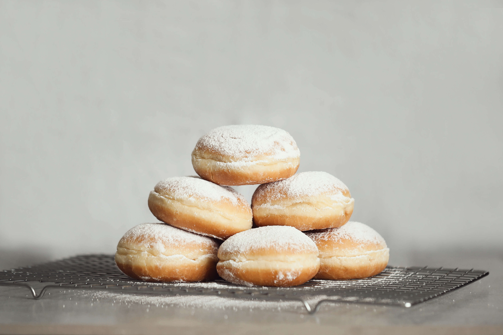

Ingredientes - Massa
1 tablete e meio ou 22 gramas de fermento biológico fresco
2 colheres de sopa ou 24 gramas de açúcar
Meia xícara de chá ou 60 mililitros de leite em temperatura ambiente
1 colher de sopa ou 15 gramas de margarina
1 grama de sal
2 ovos
450 gramas de farinha de trigo
Modo de Preparo - Sonho - Massa
Numa tigela coloque o fermento e amasse. Adicione metade do açúcar, misture até dissolver,
acrescente metade do leite e reserve.
Em outra tigela coloque a outra metade do açúcar, a margarina,
a outra metade do leite e misture com uma colher de pau.
Junte o sal, os ovos e misture.
Incorpore a mistura de fermento reservada acima e acrescente aos poucos a farinha de trigo e misture.
Transfira a massa para uma bancada e sove por 10 minutos.
Coloque a massa na tigela, cubra com pano e deixe descansar por 30 minutos.
Depois de 30 minutos, transfira a massa para a bancada novamente e
com um rolo abra com 1 centímetro de espessura.
Corte discos de 6 centímetros de diâmetro com a ajuda de um aro ou um copo,
distribua os discos de massa em uma assadeira enfarinhada,
cubra com um pano e deixe descansar até dobrar de tamanho.
Para a cobertura, misture numa panela a manteiga, o achocolatado, o açúcar e o leite.
Depois de dobrar de tamanho, frite a massa em óleo quente até dourar.
Retire da panela, coloque em um prato com papel absorvente e deixe amornar.